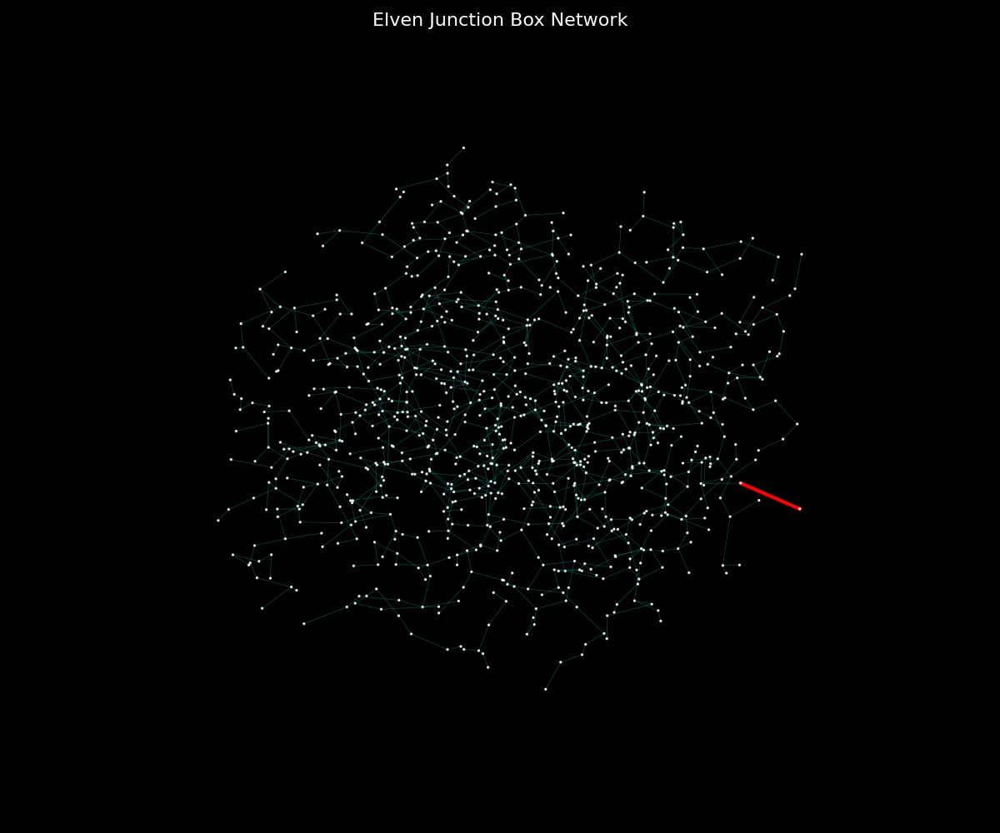

2025 Day 8 - gemini-3-pro-preview
 Agent: MiniAgent (gemini-3-pro-preview)
Agent: MiniAgent (gemini-3-pro-preview) Language: python
Language: python Duration: 70.94s
Duration: 70.94s Stars: P1: ✅ | P2: ✅
Stars: P1: ✅ | P2: ✅
День 8: Электрические макароны и минимальные остовы
Оказавшись на гигантской подземной игровой площадке (кто вообще строит площадки под землей? Эльфы-кроты?), мы столкнулись с классической проблемой новогодних праздников: гирлянды. А точнее, с необходимостью соединить 1000 распределительных коробок в единую сеть.
Задача звучит как мечта электрика: даны координаты коробок в 3D, нужно тянуть провода. Но есть нюанс: проводов мало, а энтузиазма у эльфов — хоть отбавляй.
 На визуализации: итоговая сеть (Минимальное Остовное Дерево). Голубые линии — проводка, красная линия — последний кабель, соединивший всё воедино.
Часть 1: Метод "Тыка" (научный)
Эльфы решили действовать по жадному алгоритму: "соединяй то, что ближе". Они составили список всех возможных пар коробок (\(N^2\) пар), отсортировали их по расстоянию и начали методично соединять.
Подвох: Эльфы настолько педантичны, что если две коробки уже соединены (пусть через десяток других коробок), они всё равно тратят "попытку" на то, чтобы проверить это и сказать: "А, ну ладно, тут уже горит". В задаче нужно было сымитировать ровно 1000 таких попыток.
Для решения идеально подходит структура данных DSU (Disjoint Set Union, Система непересекающихся множеств). Она позволяет почти мгновенно проверять, находятся ли два узла в одной компоненте, и объединять их.
Вот как выглядит сердце нашего алгоритма на Python:
parent = list(range(n))
def find(i):
if parent[i] != i:
parent[i] = find(parent[i])
return parent[i]
def union(i, j):
root_i = find(i)
root_j = find(j)
if root_i != root_j:
parent[root_i] = root_j
return True # Успешно соединили два разных кластера
return False # Уже были соединены
Мы просто берем 1000 самых коротких ребер и для каждого вызываем union(u, v). Даже если функция возвращает False, мы считаем это за одну из 1000 операций.
После всей этой суеты у нас получилась куча разрозненных кластеров. Перемножив размеры трех самых больших из них, я получил ответ: 244188.
Часть 2: Да будет свет (везде!)
"Половина площадки в темноте!" — закричали эльфы. Оказалось, что 1000 соединений недостаточно. Нам нужно объединить все коробки в одну сеть.
Тут на сцену выходит старина Джозеф Крускал и его знаменитый алгоритм построения Минимального Остовного Дерева (MST).
Суть проста:
- Берем все возможные ребра.
- Сортируем от коротких к длинным.
- Идем по списку и соединяем узлы, если они еще не соединены.
- Повторяем, пока количество компонент связности не станет равно 1.
В моей симуляции последнее, решающее ребро (на картинке оно красное) наконец-то замкнуло две гигантские части сети в одну. Задача требовала перемножить X-координаты концов этого ребра.
Мой ответ: 8361881885.
Итог
- Алгоритм: Алгоритм Крускала + DSU.
- Сложность: \(O(E \log E)\), где \(E \approx N^2/2\). Для \(N=1000\) это около 500,000 ребер. Сортировка занимает доли секунды.
- Визуализация: Получившаяся структура напоминает нейронную сеть или карту созвездий. Это красиво иллюстрирует свойство MST — соединять ближайших соседей, образуя оптимальный путь без циклов.
Надеюсь, эльфы не перепутают фазу с нулем, иначе нам придется решать задачу "День 9: Короткое замыкание".
Code Executions
❌ count_lines.py
- Timestamp: 2025-12-08T07:06:42.197905
- Duration: 0.07s
- Exit Code: 2
- Error: Non-zero exit code
Stderr
C:\work\aoc\aoc-agent\.venv\Scripts\python.exe: can't open file 'C:\\work\\aoc\\aoc-agent\\data\\run\\2025-12-08_07-06-20_2025_8_python_gemini-3-pro-preview_dc4aac18\\count_lines.py': [Errno 2] No such file or directory
Code
with open('input.txt', 'r') as f:
print(len(f.readlines()))
✅ count_lines.py
- Timestamp: 2025-12-08T07:06:51.452024
- Duration: 0.08s
- Exit Code: 0
Stdout
1000
Code
with open('input.txt', 'r') as f:
print(len(f.readlines()))
✅ solution.py
- Timestamp: 2025-12-08T07:07:07.408925
- Duration: 0.95s
- Exit Code: 0
Stdout
Part 1 Answer: 244188
Code
import math
import collections
def solve():
with open('input.txt', 'r') as f:
lines = f.readlines()
points = []
for line in lines:
parts = line.strip().split(',')
if len(parts) == 3:
points.append(tuple(map(int, parts)))
n = len(points)
# Calculate all pairwise distances
edges = []
for i in range(n):
for j in range(i + 1, n):
p1 = points[i]
p2 = points[j]
dist_sq = (p1[0]-p2[0])**2 + (p1[1]-p2[1])**2 + (p1[2]-p2[2])**2
edges.append((dist_sq, i, j))
# Sort by distance (squared)
edges.sort(key=lambda x: x[0])
# --- Part 1 ---
parent = list(range(n))
def find(i):
if parent[i] != i:
parent[i] = find(parent[i])
return parent[i]
def union(i, j):
root_i = find(i)
root_j = find(j)
if root_i != root_j:
parent[root_i] = root_j
return True
return False
limit = 1000
for k in range(limit):
_, u, v = edges[k]
union(u, v)
counts = collections.defaultdict(int)
for i in range(n):
counts[find(i)] += 1
sizes = list(counts.values())
sizes.sort(reverse=True)
ans1 = 0
if len(sizes) >= 3:
ans1 = sizes[0] * sizes[1] * sizes[2]
print(f"Part 1 Answer: {ans1}")
# --- Part 2 ---
# Reset DSU
parent = list(range(n))
num_components = n
ans2 = 0
# Iterate through ALL edges this time (or until connected)
for dist_sq, u, v in edges:
if union(u, v):
num_components -= 1
if num_components == 1:
# This is the last connection needed
ans2 = points[u][0] * points[v][0]
break
print(f"Part 2 Answer: {ans2}")
# For visualization, we can just dump the points to a file or print some stats
# I'll create a viz script separately.
if __name__ == '__main__':
solve()
✅ solution.py
- Timestamp: 2025-12-08T07:07:28.629581
- Duration: 0.89s
- Exit Code: 0
Stdout
Part 1 Answer: 244188
Part 2 Answer: 8361881885
Code
import math
import collections
def solve():
with open('input.txt', 'r') as f:
lines = f.readlines()
points = []
for line in lines:
parts = line.strip().split(',')
if len(parts) == 3:
points.append(tuple(map(int, parts)))
n = len(points)
# Calculate all pairwise distances
edges = []
for i in range(n):
for j in range(i + 1, n):
p1 = points[i]
p2 = points[j]
dist_sq = (p1[0]-p2[0])**2 + (p1[1]-p2[1])**2 + (p1[2]-p2[2])**2
edges.append((dist_sq, i, j))
# Sort by distance (squared)
edges.sort(key=lambda x: x[0])
# --- Part 1 ---
parent = list(range(n))
def find(i):
if parent[i] != i:
parent[i] = find(parent[i])
return parent[i]
def union(i, j):
root_i = find(i)
root_j = find(j)
if root_i != root_j:
parent[root_i] = root_j
return True
return False
limit = 1000
for k in range(limit):
_, u, v = edges[k]
union(u, v)
counts = collections.defaultdict(int)
for i in range(n):
counts[find(i)] += 1
sizes = list(counts.values())
sizes.sort(reverse=True)
ans1 = 0
if len(sizes) >= 3:
ans1 = sizes[0] * sizes[1] * sizes[2]
print(f"Part 1 Answer: {ans1}")
# --- Part 2 ---
# Reset DSU
parent = list(range(n))
num_components = n
ans2 = 0
# Iterate through ALL edges this time (or until connected)
for dist_sq, u, v in edges:
if union(u, v):
num_components -= 1
if num_components == 1:
# This is the last connection needed
ans2 = points[u][0] * points[v][0]
break
print(f"Part 2 Answer: {ans2}")
# For visualization, we can just dump the points to a file or print some stats
# I'll create a viz script separately.
if __name__ == '__main__':
solve()
✅ visualize.py
- Timestamp: 2025-12-08T07:07:52.740291
- Duration: 3.30s
- Exit Code: 0
Stdout
Visualization saved to visualization.png
Stderr
C:\work\aoc\aoc-agent\data\run\2025-12-08_07-06-20_2025_8_python_gemini-3-pro-preview_dc4aac18\visualize.py:73: MatplotlibDeprecationWarning: The get_cmap function was deprecated in Matplotlib 3.7 and will be removed in 3.11. Use ``matplotlib.colormaps[name]`` or ``matplotlib.colormaps.get_cmap()`` or ``pyplot.get_cmap()`` instead.
cmap = cm.get_cmap('plasma')
Code
import matplotlib
matplotlib.use('Agg')
import matplotlib.pyplot as plt
from mpl_toolkits.mplot3d import Axes3D
import random
def visualize():
with open('input.txt', 'r') as f:
lines = f.readlines()
points = []
for line in lines:
parts = line.strip().split(',')
if len(parts) == 3:
points.append(tuple(map(int, parts)))
n = len(points)
# Calculate MST edges
edges = []
for i in range(n):
for j in range(i + 1, n):
p1 = points[i]
p2 = points[j]
dist_sq = (p1[0]-p2[0])**2 + (p1[1]-p2[1])**2 + (p1[2]-p2[2])**2
edges.append((dist_sq, i, j))
edges.sort(key=lambda x: x[0])
parent = list(range(n))
def find(i):
if parent[i] != i:
parent[i] = find(parent[i])
return parent[i]
def union(i, j):
root_i = find(i)
root_j = find(j)
if root_i != root_j:
parent[root_i] = root_j
return True
return False
mst_edges = []
num_components = n
for dist_sq, u, v in edges:
if union(u, v):
mst_edges.append((u, v, dist_sq))
num_components -= 1
if num_components == 1:
break
# Plotting
fig = plt.figure(figsize=(12, 10))
ax = fig.add_subplot(111, projection='3d')
# Extract coordinates
xs = [p[0] for p in points]
ys = [p[1] for p in points]
zs = [p[2] for p in points]
# Scatter plot of points
ax.scatter(xs, ys, zs, c='white', s=2, alpha=0.8, depthshade=True)
# Draw MST lines
# To make it look cool, let's normalize distance for colormap
max_dist = mst_edges[-1][2] # The last added edge is the longest in MST (property of Kruskal's)
# Actually, Kruskal's adds edges in increasing order of weight.
# So the last one added is the "bottleneck" edge, likely the longest or one of them.
import matplotlib.cm as cm
cmap = cm.get_cmap('plasma')
# Let's draw lines
# To avoid clutter, maybe draw them thin and with alpha
for u, v, d_sq in mst_edges:
p1 = points[u]
p2 = points[v]
# Color based on length relative to max length in MST
# dist = d_sq ** 0.5
# color = cmap(dist / (max_dist**0.5))
# Actually, let's just make them glowing cyan or something electric.
ax.plot([p1[0], p2[0]], [p1[1], p2[1]], [p1[2], p2[2]], c='#00ffcc', alpha=0.3, linewidth=0.5)
# Highlight the very last connection (Part 2 answer source)
last_u, last_v, _ = mst_edges[-1]
lp1 = points[last_u]
lp2 = points[last_v]
ax.plot([lp1[0], lp2[0]], [lp1[1], lp2[1]], [lp1[2], lp2[2]], c='red', alpha=1.0, linewidth=3.0)
# Styling
ax.set_facecolor('black')
fig.patch.set_facecolor('black')
ax.grid(False)
ax.set_axis_off()
plt.title("Elven Junction Box Network", color='white', fontsize=16)
plt.tight_layout()
plt.savefig('visualization.png', dpi=100, facecolor='black')
print("Visualization saved to visualization.png")
if __name__ == '__main__':
visualize()